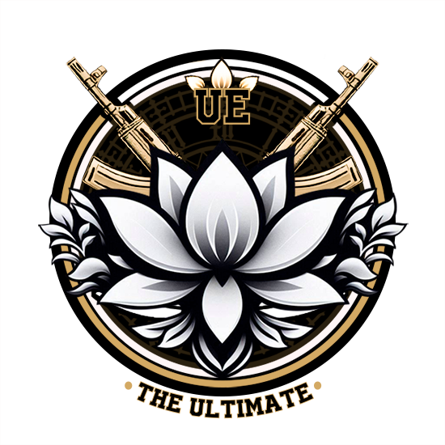
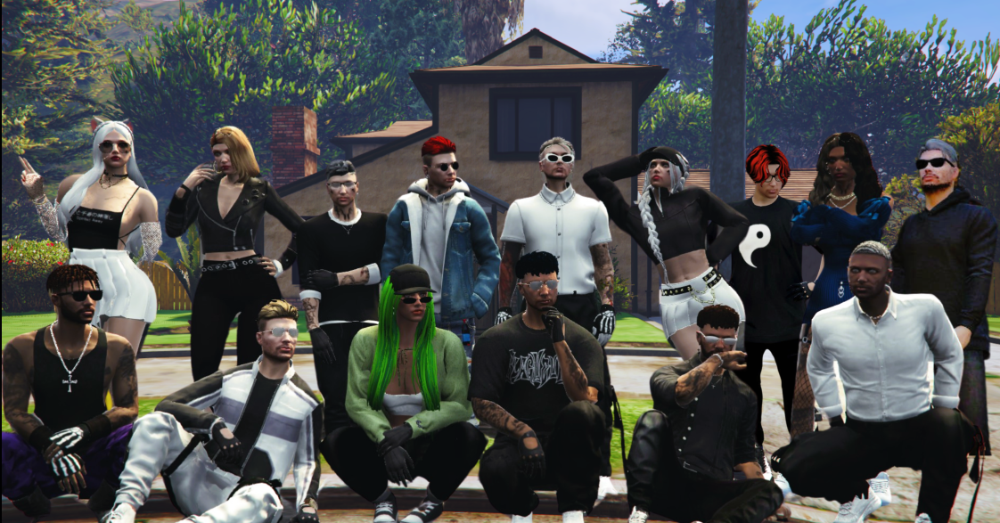

The Ultimate

Información
The Ultimate es un grupo de la primera versión de Infames Legacy. Este grupo fue creado en la última versión de InfamesRP y llevado hasta el Legacy para seguir con la historia de sus personajes. Los primeros miembros fueron Aiko, Tamy, Kai, Kendrick, Clancy y Noah.
Luego de pasar a la versión Legacy, algunos de esos se perdieron y se añadieron a nuevos miembros poco a poco, entre ellos:
- Beng Yi (BY)
- Valery
- Clara
- Bunny
- Tim
- Benja
- Leandro
- Iris
- H
- Carlitos
- Jhon
- Ámbar
- Ayla
Hay algunos más que estuvieron poco tiempo, y otros que no llegaron ni a entrar, como Tony, que fue asesinado por uno de los criminales más buscados de Los Santos en ese momento.
La Ultimete y sus zonas y conflictos
La Ultimate era una de los grupos más poderosos del servidor por ese entonces, era odiada por muchos por tener en su poder gran parte de las zonas de la ciudad. En algunos casos, otros grupos, como los verdes, LSDI y demás, parecían ponerse de acuerdo para atacar zonas del grupo y que pudieran quedarse con alguna, durándoles poco el asalto, pues era recuperado horas después.
Además, hubo un conflicto (el cual no duro nada, por lo que, no se le podría llamar "guerra") en el cuál la Ultimate le pedía a La Ultima Cena, parte del territorio que tenían además de varias cosas más, después de varios días de declararle la "guerra" estos prefirieron aceptar la mayoría de cosas para no perder lo poco que tenían.
Alianzas
Las alianzas de la Ultimate fueron pocas, la principal fue con ITP. Este grupo fue adoptado por Ultimate y consiguieron elevarlo hasta estar casi a la par de la Ultimate, llegando a compartir algunas zonas o defenderse zonas entre ellos.
Otro grupo con el que se hicieron algunos tratos fue Dark Union, y otros pequeños grupos que no duraron demasiado. Incluso por un tiempo, en una zona de la Ultimate se puso la regla de solo ir a pistola entre 4 grupos, entre ellos DK e ITP. Con los demás grupos era más complicado hacer tratos porque eran muy llorones y en lugar de hacer tratos con la Ultimate, querían si o si conseguir quitarles la zona, cosa que el 95% de las veces era casi imposible porque podían llegar a estar todos los de la Ultimate y coordinarse para llegar hasta allí.
Fin de la Ultimate
Luego de bastante tiempo, después de una serie de sucesos, The Ultimate se tuvo que retirar de Los Santos, yendo cada uno por su cuenta para evitar ser descubiertos y llegando incluso a no saber nada más de algunos de sus compañeros. La cosa quedó así:
- Aiko y Ayla juntos después de descubrir que no eran hermanos.
- Clancy desaparecido y perseguido por la policía.
- BY y Tami juntos y en NY.
- Valery desaparecida.
- Benja con su esposa e hijos en otro país.
- Tim con su pareja por ahí (auqnue muchos creen que puede llegar a estar en federal).
- Leandro y Jhon muertos (fueron asesinados por el grupo).
- De los demás no se sabe mucho más.
